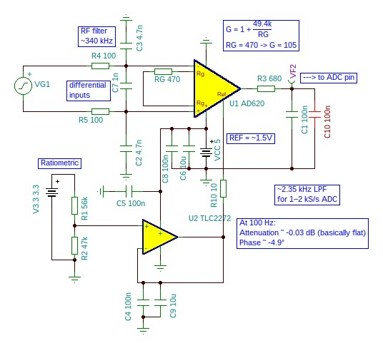
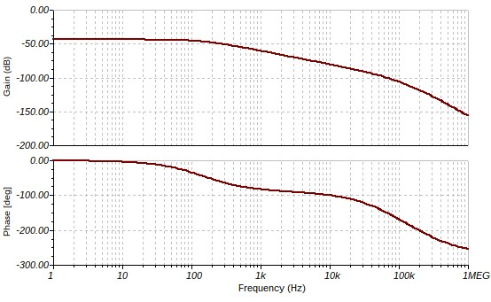
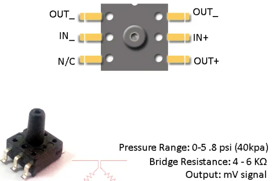
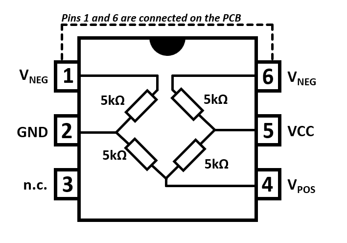
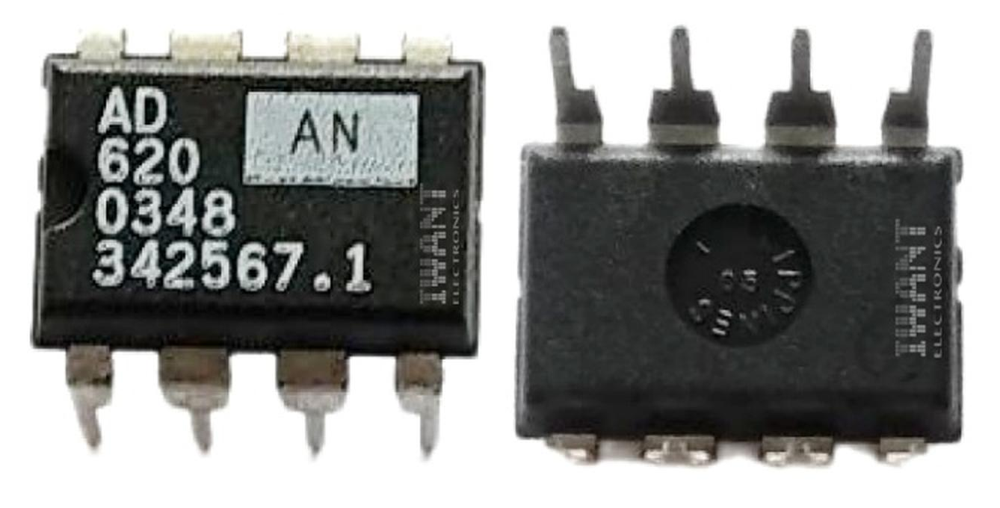
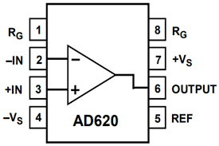
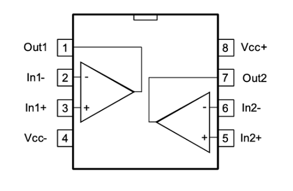
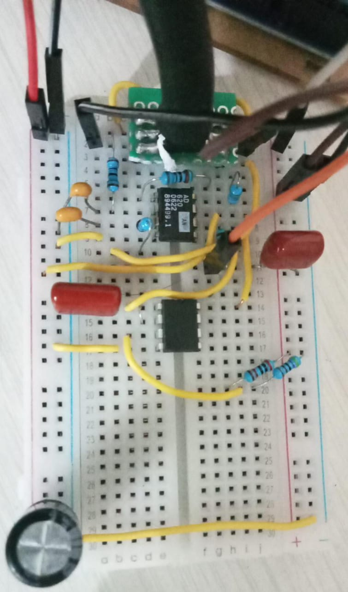
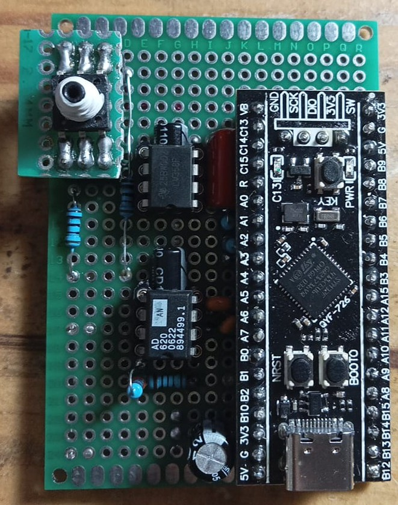

Dokumentasi Hardware
Analog Front End (AFE)
Analog Front End adalah bagian paling kritis dari sistem CuffnCode. AFE bertugas memperkuat sinyal milivolt dari sensor tekanan MPS20N0040D ke level yang dapat dibaca oleh ADC mikrokontroler (0-3.3V).
AFE menggunakan dua tahap pemrosesan:
- Instrumentation Amplifier (AD620): Memperkuat sinyal differential dari sensor bridge dengan gain ~105x
- Level Shifter (TLC2272): Menggeser level DC output ke ~1.5V untuk memberi headroom sinyal positif dan negatif

Spesifikasi AFE
| Parameter | Nilai |
|---|---|
| Tegangan Supply | 5V (AD620), 3.3V (TLC2272) |
| Gain Total | ~105x |
| Offset Output | ~1.5V |
| Bandwidth | DC - 1kHz |
| Noise | Low-noise (AD620: 0.28µV p-p, TLC2272: rail-to-rail) |
| Input Range | 0-20mV (sensor full-scale: 50-100mV dengan divider) |
| Output Range | 0-3.3V (clipped to ADC range) |
Simulasi TINA-TI
Simulasi rangkaian AFE dilakukan menggunakan TINA-TI (Texas Instruments SPICE-based simulator) untuk memvalidasi respons frekuensi dan level DC.
AC Simulation

Diagram Bode menunjukkan respons frekuensi AFE. Gain tetap flat (~40dB) hingga frekuensi cutoff yang cukup untuk aplikasi tekanan darah (DC - 100Hz).
File Simulasi
File simulasi tersedia di direktori TINA-TI/:
afe-v1.tsc- Skematik utama AFEafe-vs-input.tsc- Simulasi variasi inputad620.cir- Model SPICE AD620tlc2272.cir- Model SPICE TLC2272
Perhitungan Gain
Instrumentation Amplifier Gain
Dengan Rg = 470Ω, gain AD620 sekitar 105x. Ini berarti input 50mV akan menghasilkan output 5.25V (sebelum level shifting).
Level Shifter Offset
Pembagi tegangan dengan R1=47kΩ dan R2=56kΩ menghasilkan offset ~1.5V dari supply 3.3V. Offset ini memberi headroom ±1.8V untuk osilasi sinyal tekanan.
Transfer Function Lengkap
Pressure (mmHg) = (Vout - 1.5V) × 300 / (3.3V - 1.5V)
MPS20N0040D - Pressure Sensor
MPS20N0040D adalah sensor tekanan tipe bridge (Wheatstone bridge) yang menghasilkan output milivolt proporsional terhadap tekanan yang diberikan. Sensor ini umum digunakan pada tensimeter digital hobbyist dan mudah didapat di pasar Indonesia.
| Parameter | Nilai |
|---|---|
| Tipe | Piezoresistive bridge |
| Rentang Tekanan | 0-40 kPa (0-300 mmHg) |
| Output Full-Scale | 50-100 mV (typical) |
| Impedansi Bridge | 4-6 kΩ |
| Supply Voltage | 5V DC |
| Akurasi | ±0.5% FS |
| Linearitas | ±0.3% FS |
| Histeresis | ±0.2% FS |


AD620 - Instrumentation Amplifier
AD620 adalah instrumentation amplifier low-cost, low-power yang banyak tersedia di pasar Indonesia. Dengan satu resistor eksternal (Rg), gain dapat diatur dari 1 hingga 1000x.
| Parameter | Nilai |
|---|---|
| Supply Voltage | ±2.3V to ±18V (atau single supply 5V) |
| Gain Range | 1 - 1000 (diatur dengan Rg) |
| Input Noise | 0.28 µV p-p (0.1-10Hz) |
| Bandwidth | 120 kHz (G=100) |
| CMRR | 100 dB (min) |
| Offset Voltage | 50 µV (max) |
| Package | DIP-8 / SOIC-8 |


Konfigurasi Pin
| Pin | Nama | Fungsi |
|---|---|---|
| 1 | Rg | Resistor gain (koneksi ke pin 8) |
| 2 | -IN | Input inverting (dari sensor -) |
| 3 | +IN | Input non-inverting (dari sensor +) |
| 4 | VS- | Negative supply (GND) |
| 5 | REF | Reference voltage (GND) |
| 6 | OUTPUT | Output (ke level shifter) |
| 7 | VS+ | Positive supply (+5V) |
| 8 | Rg | Resistor gain (koneksi ke pin 1) |
TLC2272 - Rail-to-Rail Op-Amp
TLC2272 adalah dual operational amplifier rail-to-rail keluaran Texas Instruments. Dalam desain ini, satu op-amp digunakan sebagai level shifter untuk menggeser output AD620 ke tegangan referensi ~1.5V.
| Parameter | Nilai |
|---|---|
| Supply Voltage | 3.3V (single supply) |
| Output Swing | Rail-to-rail (0 - 3.3V) |
| Input Noise | 9 nV/√Hz |
| Bandwidth | 2.2 MHz |
| Package | DIP-8 / SOIC-8 |

Konfigurasi Level Shifter
Op-amp dikonfigurasi sebagai non-inverting summing amplifier dengan input dari AD620 dan tegangan offset dari pembagi resistor (47kΩ + 56kΩ).
Dengan Rf = Ri, gain = 2 untuk tahap level shifter. Offset ~1.5V memastikan sinyal selalu dalam range positif ADC.
STM32F411CE (Black Pill)
STM32F411CE adalah mikrokontroler berbasis ARM Cortex-M4F dengan FPU, clock 100MHz. Dikenal dengan sebutan "Black Pill", board ini murah, powerful, dan banyak digunakan di proyek embedded.
| Parameter | Nilai |
|---|---|
| Core | ARM Cortex-M4F with FPU |
| Clock Speed | 100 MHz (max) |
| Flash Memory | 512 KB |
| SRAM | 128 KB |
| ADC | 12-bit, 16 channels, 2.4 MSPS |
| DMA | 8 stream DMA controller |
| Timer | 11 timers (incl. PWM, encoder) |
| UART | 3x USART |
| I2C | 3x I2C |
| SPI | 4x SPI |
| USB | USB 2.0 OTG FS |
| Package | LQFP48 / WeAct Black Pill board |


Clock Configuration
Sistem clock dikonfigurasi sebagai berikut:
| Clock | Sumber | Frekuensi |
|---|---|---|
| HSE | External crystal | 25 MHz |
| SYSCLK | PLL (HSE / 25 × 200 / 2) | 100 MHz |
| HCLK | AHB (SYSCLK / 1) | 100 MHz |
| APB1 | SYSCLK / 2 | 50 MHz |
| APB2 | SYSCLK / 1 | 100 MHz |
| ADC clock | APB2 / 4 | 25 MHz |
Desain PCB (KiCad)
Desain PCB untuk Analog Front End dikerjakan menggunakan KiCad 9.0.
File desain tersedia di direktori KiCad/.
File KiCad
AFE.kicad_sch- Skematik AFEAFE.kicad_pcb- Layout PCBAFE.kicad_pro- Project fileAFE.kicad_prl- Project settings
Komponen pada PCB
| Ref | Komponen | Package |
|---|---|---|
| U1 | AD620 Instrumentation Amplifier | DIP-8 |
| U2 | TLC2272 Dual Op-Amp | DIP-8 |
| R1 | 47 kΩ (offset divider) | 0603 |
| R2 | 56 kΩ (offset divider) | 0603 |
| Rg | 470 Ω (gain resistor) | 0603 |
| C1-C4 | 100 nF (decoupling) | 0603 |
| J1 | Connector sensor | 01x05 pin header |
Layout PCB masih dalam tahap pengembangan. Kontribusi dan saran sangat diterima.
Pin Mapping STM32F411CE
| Pin MCU | Fungsi | Koneksi |
|---|---|---|
| PA0 | ADC1_CH0 | Output AFE (sensor pressure) |
| PA1 | ADC1_CH1 | Tegangan referensi (optional) |
| PA2 | USART2_TX | Debug UART TX |
| PA3 | USART2_RX | Debug UART RX |
| PA8 | GPIO Output | MOSFET Pump control |
| PB0 | GPIO Output | MOSFET Valve control |
| PC13 | GPIO Output | LED indikator (active low) |
| PA9 | USART1_TX | Data output (optional) |
| PA10 | USART1_RX | Data input (optional) |
Keamanan Hardware
Precautions
- Over-pressure: Sensor MPS20N0040D dapat rusak jika tekanan melebihi 300 mmHg. Firmware memiliki proteksi, tapi jangan mengandalkan sepenuhnya.
- USB Ground Noise: Jika power dari USB PC, noise ground dapat mempengaruhi kualitas sinyal. Gunakan ferrite bead pada kabel USB.
- Power Supply: Gunakan regulated 5V supply untuk AD620. STM32 Black Pill memiliki regulator 3.3V internal.
- Electrostatic Discharge: Komponen CMOS sensitif terhadap ESD. Gunakan wrist strap saat menyolder.
Recommended Test Procedure
- Uji continuity dengan multimeter sebelum power ON
- Ukur tegangan supply (5V dan 3.3V) tanpa sensor
- Ukur output AD620 tanpa tekanan (should be ~1.5V)
- Hubungkan sensor, beri tekanan bertahap dengan bulb pump manual
- Verifikasi output ADC di UART debug
- Kalibrasi dengan manometer aneroid referensi